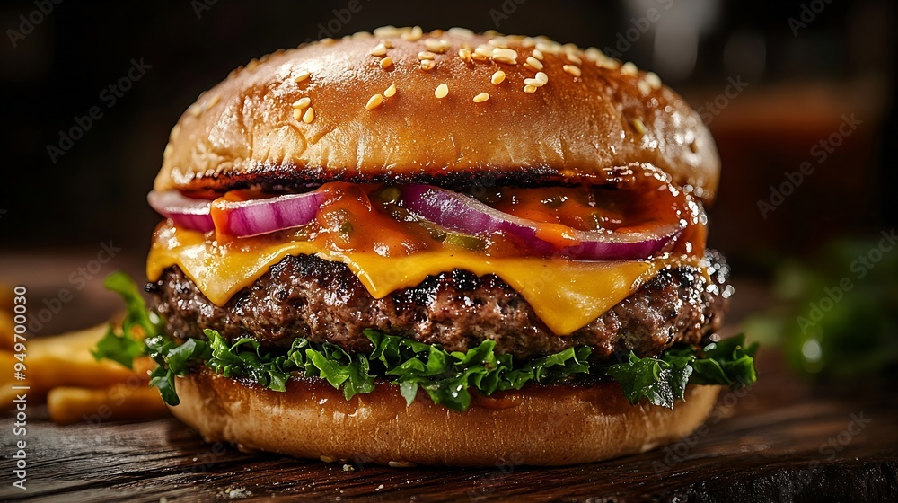

burger recipe :

A burger is a classic fast-food favorite featuring a juicy grilled beef patty nestled between two soft, toasted buns. Typically topped with melted cheese, crisp lettuce, tomatoes, onions, and pickles, it’s often dressed with condiments like ketchup and mustard. This savory delight is loved worldwide for its satisfying flavors and endless customization options, making it a staple at barbecues, restaurants, and food trucks alike.
ingredients :
- 1 lb ground beef (80/20 blend for juiciness)
- Salt and pepper, to taste
- 4 hamburger buns
- 4 slices of cheese (optional, like cheddar or American)
- Lettuce leaves
- Tomato slices
- Onion slices (red or white)
- Pickles (slices or whole)
- Condiments (ketchup, mustard, mayonnaise)
steps for making it :
- Prepare the Patties: In a bowl, season 1 lb of ground beef with salt and pepper. Divide the meat into four equal portions and shape them into patties, making a slight indentation in the center to prevent them from puffing up while cooking.
- Preheat the Grill or Pan: Heat a grill or skillet over medium-high heat. If using a skillet, you can add a little oil to prevent sticking.
- Cook the Patties: Place the patties on the grill or skillet. Cook for about 3-4 minutes on one side, then flip them. If you’re adding cheese, place a slice on each patty after flipping. Cook for an additional 3-4 minutes, or until the desired doneness is reached (medium-rare to medium is about 145°F to 160°F internal temperature).
- Toast the Buns: While the patties are cooking, you can lightly toast the hamburger buns on the grill or in a toaster until golden brown.
- Assemble the Burger: On the bottom half of each bun, place the cooked patty. Top with lettuce, tomato slices, onion slices, and pickles. Add your favorite condiments, then place the top half of the bun on.
- Serve and Enjoy: Serve the burgers immediately with sides like fries or a salad. Enjoy!